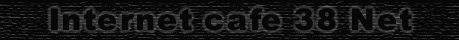

| Создан Интернет клуб "38-NET" на базе фирмы "МИДЕК". Идея создания такого клуба возникла уже давно, а осуществилась только 22 апреля 1999 года. Открытие нашего Интернет-клуба произошло 22 апреля 1999г. На открытии присутствовало много представителей различных фирм, которые в перспективе могут стать партнерами и спонсорами при проведении турниров по сетевым играм и другим общественным мероприятиям. Нашими провайдерами является АО "Электросвязь". С Интернетом на сегодняшний день нас связывает канал в 128К. Класс составляют 10 персональных компьютеров PentiumII - 350 Mhz, RAM 64, Riva TNT 128 16 Mb и стaмегабитная сетка. |
Почему "38-NET"? |
| Часто задаваемый вопрос - это почему Интернет
клуб назвали именно так, а не иначе. Ответ на этот
вопрос следующий: Во-первых, наша Иркутская
область имеет административный номер: "38".
(Если Вы обращали внимания на номера иркутских
машин, то, наверное, замечали надпись "38 RUS")
Во-вторых, наш адрес говорит сам за себя: г.Иркуск,
ул,Марата-38. То место, куда Вы попадете, посетив Нас - это уютный подвальчик, со старинными арочными потолками, лакированными столами, мягкими вращающимися стульями, заботливо приготовленными компьютерами и ожидающей Вас пищей... . Здесь Вас всегда с пониманием встретит обслуживающий персонал. |
| 1. Приводить родителей, друзей и врагов с их
родителями 2. Приносить с собой информацию из мира игр 3. Общение, общение и общение 4. Помогать ламерам в освоении искусства игры |
Что делать в клубе строго воспрещается: |
| 1. Курить в клубе запрещено. 2. Нельзя пребывать в состоянии нестояния. 3. Портить софт, клаву и мышь. 4. Подходить к компьютерам в верхней одежде. 5. Ругаться нецензурными словами. 6. Доставать админа просьбами о бесплатном доступе. 7. Пьянствовать водку. |
| Action: Quake I Quake II Quake III:Arena (test) Daikatana KingPin Half-Life Delta Force Doom II Duke Nukem (есть еще такие извращенцы) Simulators: Strategy: Role Playing Game: Из всего вышеперечисленного лидирующую позицию занимает, естественно, кудвака (Quake II). В эту легендарную игрушку рубятся почти все кто приходит в клуб! Даже Quake3 test не идет ни в какое сравнение со второй Квакой! Ну дак еще бы...:). Естественно можно отвлечься и поиграть в СтарКрафт, если не по сетке (в клубе вдруг не оказалось игроков), то уж через Battle.Net обязательно. А вообще можно попросить админа поставить любую игру которую для Вас или Вашего ребенка начиная от простенького паззла и кончая наисложнейшим Квестом. В списках всегда есть горячие новинки типа KingPin, Heavy Gear 2, Daikatana... Ктстаи, все эти игры и многое другое можно купить! Каждый диск стоит по 60 рублей, и если вы все-таки решились на покупку, диск аккуратненько достанут, вставят в CD-ROM, проинсталлируют, и покажут вам. Если что-то не работает, сходят в Интернет, поищут обновления или фиксы. В общем все для вашего удобства и спокойствия. |
| прежде чем читать досье, ознакомтесь с
примечанием : я не ручаюсь за точность этого раздела, но все-таки он отражает большинство черт клубного персонала. Если вы с чем-то не согласны то пишите на мой мейл. Наш босс. Угу. Именно наш босс Саша Евгеньевич aka sasa. Загадочная личность. Несмотря на гангстерскую внешность, вполне приятный человек. Не очень разговорчив, но компенсирует это делами и вечным стремлением сделать клуб все более удобным. Честь ему и хвала. Не очень любит, когда его просят о бесплатном доступе, говорит что это право надо заслужить, что, кстати, правильно. Главный генератор идей и турниров. Сам играть не очень любит, но если играет то старается это делать хорошо. Любит пошутить, но хотя и старается вставлять только "уместные" шутки, все-равно это у него не всегда выходит.:-) Админ 1-й. Вовка, он же VovaZ. Веселый и разговорчивый. Мягкий и культурный, но за мягкой внешностью скрывается серьезный человек который хорошо выполняет свою работу. Играть любит во все, что под руку подвернется, но, конечно, много внимания уделяет Кваке (второй). Если не играет, то болтает с посетителями или с нами (под словом "нами" подразумеваются завсегдатаи и "отцы" клуба). Знает довольно много, что делает его ОЧЕНЬ интересным собеседником. Админ 2-й. Евгений, он же [FAq] Patriot. Бармены(барвумены) пока ничего нельзя сказать по этому поводу, так как сказали, что эти самые личности вскорости сменятся. Охранник бессменнй Григорий, он же Вирус Ли. Сейчас на службе в Дагестане. Хороший человек. Отлично справляется с возможными беспорядками. Использует повсеместно хакерскую лексику. Профессионал высокого класса. Любит пиво и общение. Самый-самый админ. Андрюха aka Bosyak. Занимается, наверное, самой сложной работой в клубе - обслуживанием сервера (который, кстати, находится под управлением ОС FreeBSD - Это вам не форточками мышкой хлопать, хех... классный каламбур получился:). Вебмастер. Вообще-то вебмастер и вебподмастерье :). Вуду и Ангел. Совершенно незаменимые личности. Помогают существовать клубу приманивая клиентов, и выигрывая у них пиво, которое, кстати, очень любят (примите к сведению :). По пути помогают клиентам в работе с компьютерами и создают на заказ web-странички. Вуду (он же VooDoo.38) - отец иркутского квейка, делает основную работу по написанию этих самых страничек (HTML и рисование картинок). Но он слегка консервативен!. Вот тут то и вступает в работу вторая половина вебмастерской команды... Ангел же наооборот старается сделать, что-либо либеральное, что у него далеко не всегда получается. Хотя, вкупе, эти две личности работает достаточно неплохо, получая как результат нечто среднее, между новаторскими идеями и консервативным стилем! Заключение на этом я заканчиваю досье на персонал клуба.По-моему, получилось неплохо,а?? |